Taxi GPS数据处理
B站-同济小旭学长
代码下载
在这个例子中，我们将介绍如何使用 TransBigData 包来高效处理 Taxi GPS 数据。首先，导入 TransBigData 并使用 pandas 读取数据
!pip3 install mapclassify==2.4.3
!pip3 install -U transbigdata==0.4.7
!pip3 install keplergl==0.3.2
import transbigdata as tbd
import pandas as pd
import geopandas as gpd
import matplotlib.pyplot as plt
import warnings
warnings.filterwarnings('ignore')
# Read data
data = pd.read_csv('data/TaxiData-Sample.csv', header=None)
data.columns = ['VehicleNum', 'Time', 'Lng', 'Lat', 'OpenStatus', 'Speed']
data.head()
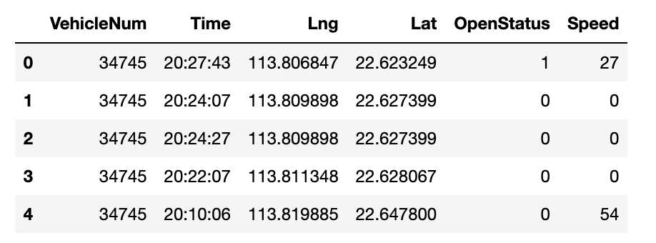
# Read the GeoDataFrame of the study area
sz = gpd.read_file(r'data/sz.json')
sz.crs = None
sz.head()
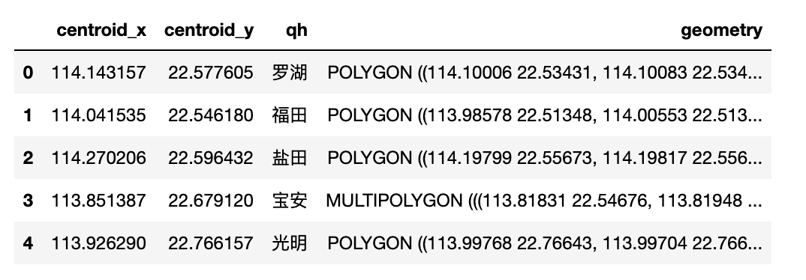
fig = plt.figure(1, (8, 3), dpi=150)
ax1 = plt.subplot(111)
sz.plot(ax=ax1)
plt.xticks([], fontsize=10)
plt.yticks([], fontsize=10);
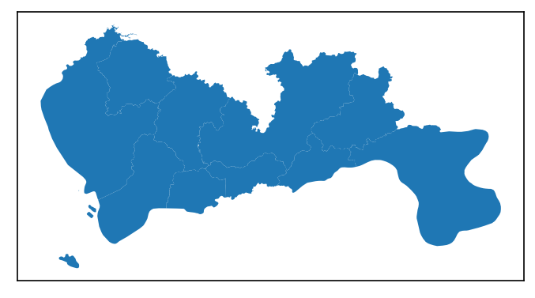
数据预处理
TransBigData 集成了几种常用的数据预处理方法。 使用tbd.clean_outofshape方法，给定研究区域的数据和GeoDataFrame，可以删除研究区域外的数据。 tbd.clean_taxi_status 方法可以过滤掉乘客状态（OpenStatus）瞬时变化的数据。 使用预处理方式时，需要将对应的列名作为参数传入：
# Data Preprocessing
# Delete the data outside of the study area
data = tbd.clean_outofshape(data, sz, col=['Lng', 'Lat'], accuracy=500)
# Delete the data with instantaneous changes in passenger status
data = tbd.clean_taxi_status(data, col=['VehicleNum', 'Time', 'OpenStatus'])
数据网格化
数据分布最基本的表达方式是地理网格的形式；
数据网格化后，每个 GPS 数据点映射到相应的网格。 对于数据网格化，首先需要确定网格化参数（可以理解为定义一个网格坐标系）：
# 数据网格化
# 定义边界并生成网格参数（经纬度）
bounds = [113.6, 22.4, 114.8, 22.9]
params = tbd.area_to_params(bounds, accuracy=500)
print(params)
{'slon': 113.6, 'slat': 22.4, 'deltalon': 0.004872390756896538, 'deltalat': 0.004496605206422906, 'theta': 0, 'method': 'rect', 'gridsize': 500}
获得网格化参数后，下一步就是将 GPS 映射到其对应的网格上。
使用 tbd.GPS_to_grids，它将生成 LONCOL 列和 LATCOL 列。 两列一起可以指定一个网格：
# Mapping GPS data to grids
data['LONCOL'], data['LATCOL'] = tbd.GPS_to_grid(data['Lng'], data['Lat'], params)
data.head()
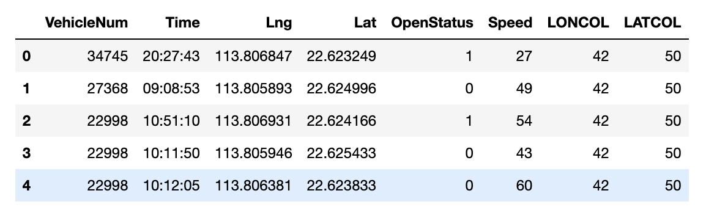
计算每个网格中的数据量：
# Aggregate data into grids
datatest = data.groupby(['LONCOL', 'LATCOL'])['VehicleNum'].count().reset_index()
datatest.head()
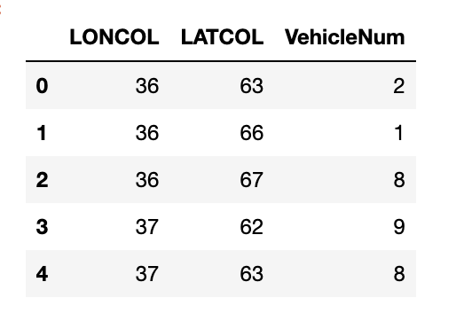
将生成网格的geometry并将其转换为 GeoDataFrame
# Generate the geometry for grids
datatest['geometry'] = tbd.grid_to_polygon([datatest['LONCOL'], datatest['LATCOL']], params)
# Change it into GeoDataFrame
# import geopandas as gpd
datatest = gpd.GeoDataFrame(datatest)
datatest.head()
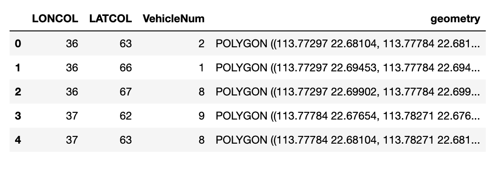
绘制生成的网格：
# Plot the grids
fig = plt.figure(1, (16, 6), dpi=300)
ax1 = plt.subplot(111)
# tbd.plot_map(plt, bounds, zoom=10, style=4)
datatest.plot(ax=ax1, column='VehicleNum', legend=True)
plt.xticks([], fontsize=10)
plt.yticks([], fontsize=10)
plt.title('Counting of Taxi GPS Trajectory Points', fontsize=12);
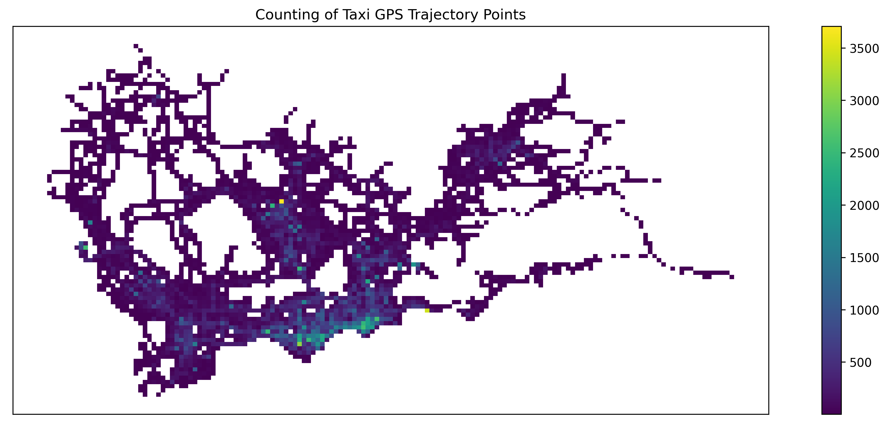
# Plot the grids
fig = plt.figure(1, (16, 6), dpi=300) # 确定图形高为6，宽为8；图形清晰度
ax1 = plt.subplot(111)
datatest.plot(ax=ax1, column='VehicleNum', legend=True, scheme='quantiles')
# plt.legend(fontsize=10)
plt.xticks([], fontsize=10)
plt.yticks([], fontsize=10)
plt.title('Counting of Taxi GPS Trajectory Points', fontsize=12);
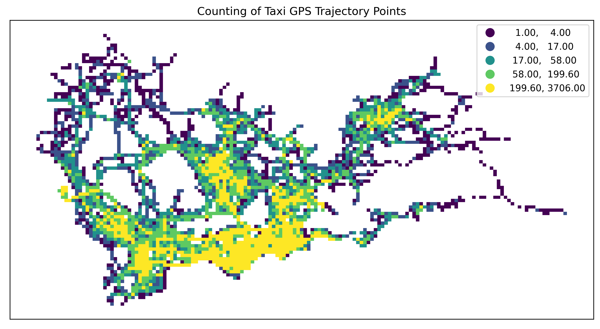
# Plot the grids
fig = plt.figure(1, (16, 6), dpi=150) # 确定图形高为6，宽为8；图形清晰度
ax1 = plt.subplot(111)
datatest.plot(ax=ax1, column='VehicleNum', legend=True, cmap='OrRd', scheme='quantiles')
# plt.legend(fontsize=10)
plt.xticks([], fontsize=10)
plt.yticks([], fontsize=10)
plt.title('Counting of Taxi GPS Trajectory Points', fontsize=12);
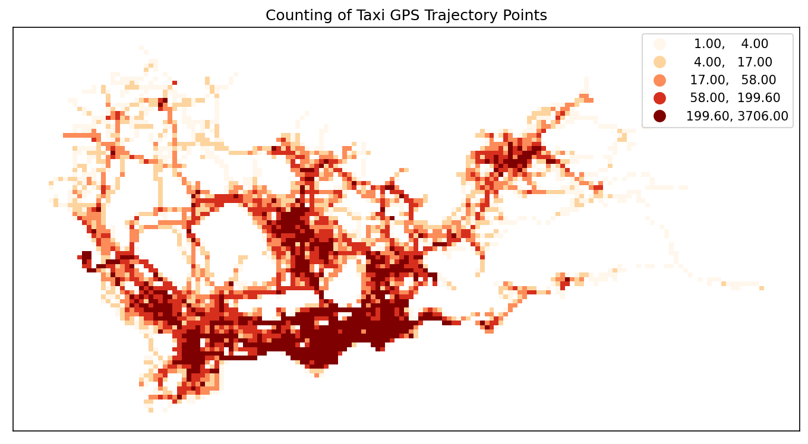
Origin-destination(OD) 提取和汇总出租车行程
使用 tbd.taxigps_to_od 方法并传入对应的列名来提取出租车行程 OD：
# Extract taxi OD from GPS data
oddata = tbd.taxigps_to_od(data,col = ['VehicleNum', 'Time', 'Lng', 'Lat', 'OpenStatus'])
oddata
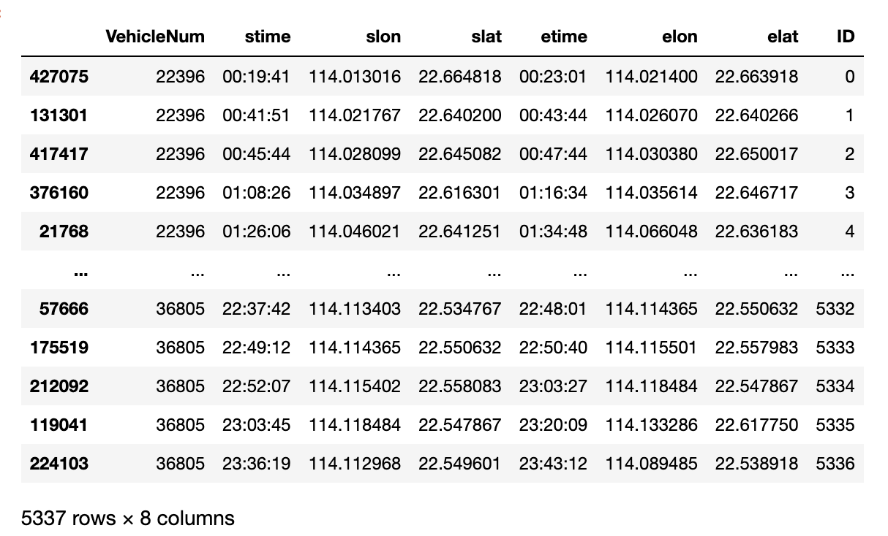
聚合提取的 OD 并生成 LineString GeoDataFrame
# Gridding and aggragate data
od_gdf = tbd.odagg_grid(oddata, params)
od_gdf.head()
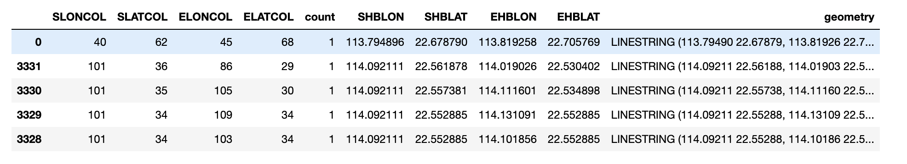
# Plot the grids
fig = plt.figure(1, (16, 6), dpi=150) # 确定图形高为6，宽为8；图形清晰度
ax1 = plt.subplot(111)
# data_grid_count.plot(ax=ax1, column='VehicleNum', legend=True, cmap='OrRd', scheme='quantiles')
od_gdf.plot(ax=ax1, column='count', legend=True, scheme='quantiles')
plt.xticks([], fontsize=10)
plt.yticks([], fontsize=10)
plt.title('OD Trips', fontsize=12);
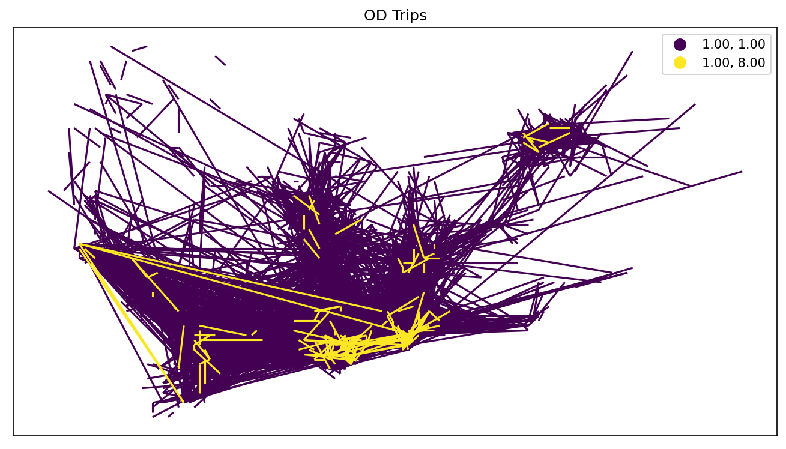
将 OD 聚合成多边形
TransBigData 还提供了将 OD 聚合成多边形的方法
# Aggragate OD data to polygons
# without passing gridding parameters, the algorithm will map the data
# to polygons directly using their coordinates
od_gdf = tbd.odagg_shape(oddata, sz, round_accuracy=6)
fig = plt.figure(1, (16, 6), dpi=150) # 确定图形高为6，宽为8；图形清晰度
ax1 = plt.subplot(111)
od_gdf.plot(ax=ax1, column='count')
plt.xticks([], fontsize=10)
plt.yticks([], fontsize=10)
plt.title('OD Trips', fontsize=12);
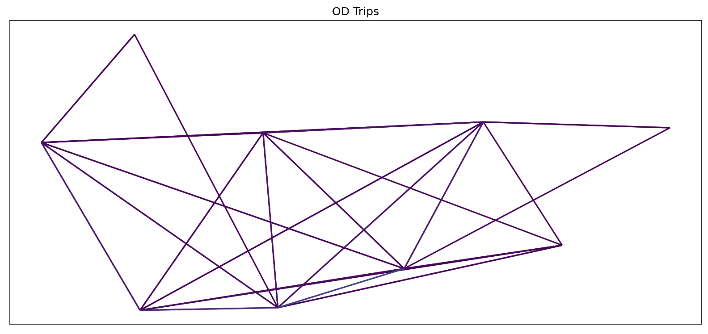
基于 Matplotlib 的地图绘制
TransBigData 还在 matplotlib 中提供底图加载。 在使用此方法之前，您需要设置您的 mapboxtoken 和底图的存储位置，请参见：此链接。tbd.plot_map 添加底图和 tbd.plotscale 以添加比例和指南针：
# Create figure
fig = plt.figure(1, (10, 10), dpi=300)
ax = plt.subplot(111)
plt.sca(ax)
# Load basemap
tbd.plot_map(plt, bounds, zoom=12, style=4)
# Define an ax for colorbar
cax = plt.axes([0.05, 0.33, 0.02, 0.3])
plt.title('OD\nMatrix')
plt.sca(ax)
# Plot the OD
od_gdf.plot(ax=ax, vmax=100, column='count', cax=cax, legend=True)
# Plot the polygons
sz.plot(ax=ax, edgecolor=(0, 0, 0, 1), facecolor=(0, 0, 0, 0.2), linewidths=0.5)
# Add compass and scale
tbd.plotscale(ax, bounds=bounds, textsize=10, compasssize=1, accuracy=2000, rect=[0.06, 0.03], zorder=10)
plt.axis('off')
plt.xlim(bounds[0], bounds[2])
plt.ylim(bounds[1], bounds[3])
plt.show()
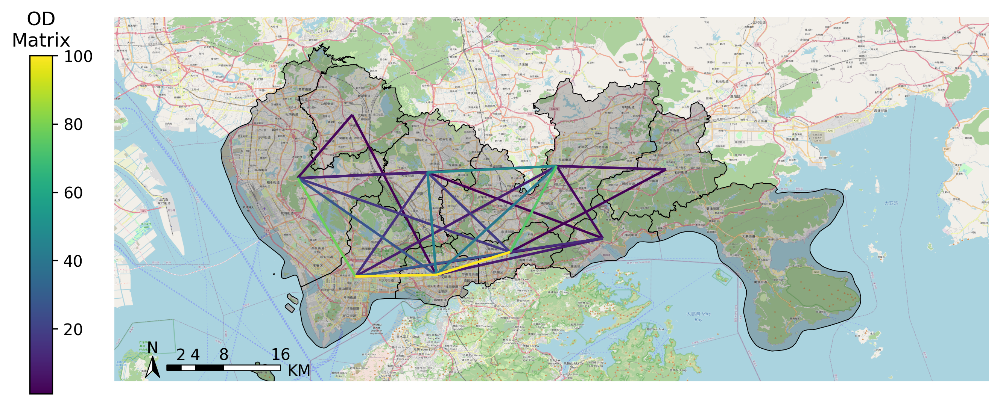
## 提取出租车轨迹 使用`the.taxigps_traj_point`方法，输入GPS数据和OD数据，可以提取轨迹点
data_deliver, data_idle = tbd.taxigps_traj_point(data,oddata,col=['VehicleNum',
'Time',
'Lng',
'Lat',
'OpenStatus'])
data_deliver.head()
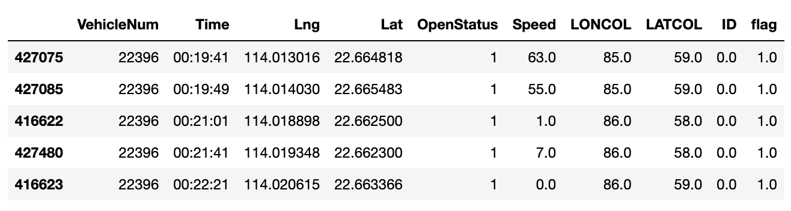
data_idle.head()
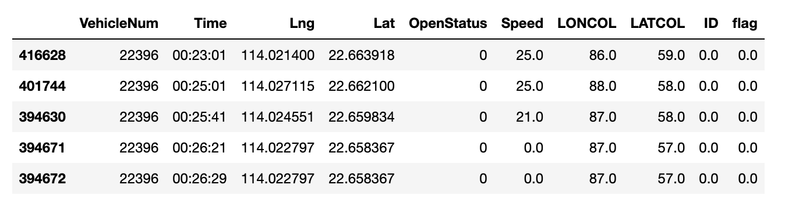
生成轨迹图
traj_deliver = tbd.points_to_traj(data_deliver)
traj_deliver.plot();
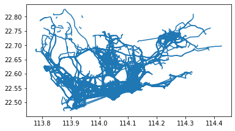
traj_idle = tbd.points_to_traj(data_idle[data_idle['OpenStatus'] == 0])
traj_idle.plot()
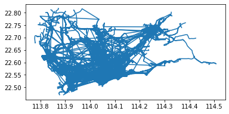
轨迹可视化Trajectories visualization
TransBigData 的内置可视化功能利用了可视化包 keplergl ，使用简单代码即可在 Jupyter notebook 上交互式地显示轨迹数据。
要使用此方法，请为 python 安装 keplergl 包：
pip3 install keplergl
安装后，需要按照 link 配置jupyter notebook
Visualization of trajectory data:
tbd.visualization_trip(data_deliver)
Processing trajectory data...
Generate visualization...
User Guide: https://docs.kepler.gl/docs/keplergl-jupyter
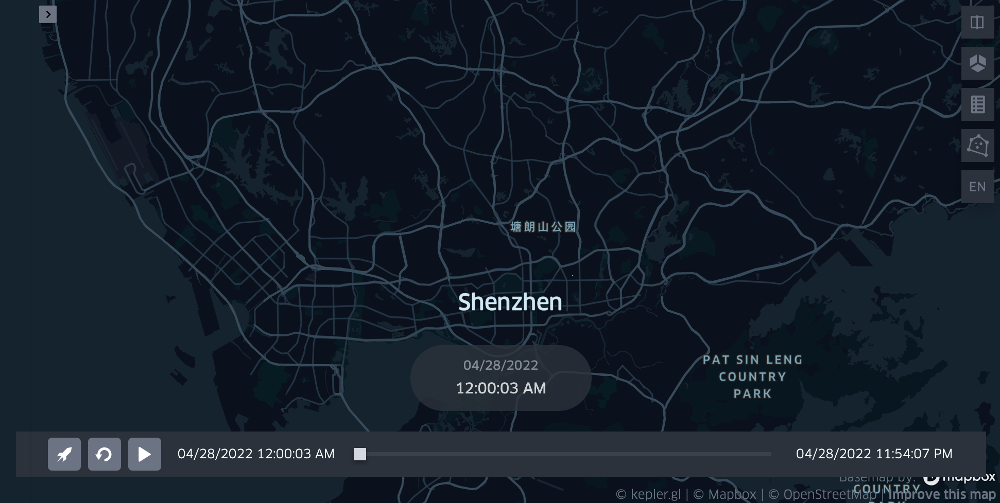